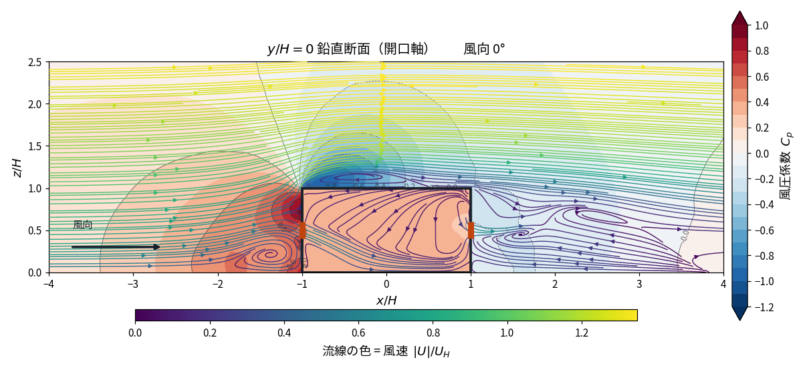
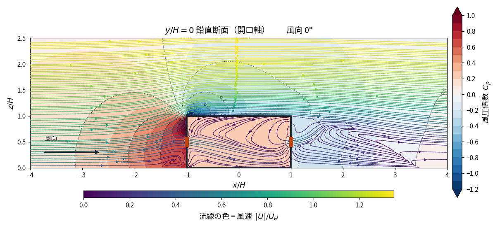
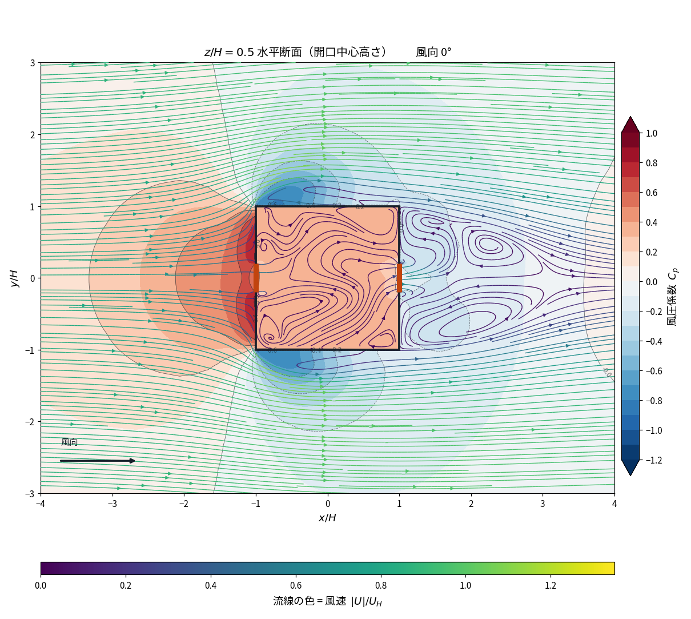
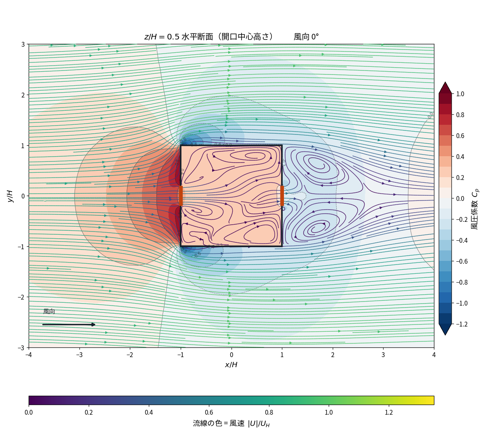

同一格子・同一境界条件のもとで、乱流モデルと対流項の離散化だけを 変えた 4 ケース（2 × 2）を比較する。通風量の差は 3.7% にとどまったが、 流れ場の構造には決定的な違いが生じた。 積分量を決めるのは乱流モデルで、離散化スキームの寄与はほぼゼロ。 ただし剥離構造は両方が壊す。
標準 k-ε + 1 次風上に替えると、屋根面の剥離泡が完全に消滅した。 k-ω SST + QUICK では屋根長の 3/4 を覆い x/H = +0.50 で再付着していた逆流域が、 逆流セル 0 個になる。建物前面のスタンディング渦も 最大逆流速度が 0.437 から 0.129 UH へ 70% 減衰し、 到達距離が 0.93H から 0.53H へ縮む。
通風量の差は −3.7%（0.03665 → 0.03529）にすぎない。 積分量だけを見ていると、この構造の崩壊は見えない。
一方で計算コストは大きく違う。標準 k-ε + 1 次風上 + SIMPLEC は
2,771 反復・約 1.2 時間で残差 10⁻⁸ まで収束した。
k-ω SST + QUICK + SIMPLE は 20,000 反復・約 9.6 時間かけても
residualControl を満たさない。
速く厳しく収束したほうが、実験からも物理からも遠い。
格子（560,500 セル）、境界条件、流入プロファイル（鉛直 52 点の実測値）、
開口の実装（createBaffles による厚さゼロ壁、24 × 12 = 288 面）は
完全に同一である。変えたのは次の 3 点のみ。
| 項目 | ケース A | ケース B |
|---|---|---|
| 乱流モデル | k-ω SST | 標準 k-ε（高 Re 型） |
| 対流項（運動量） | bounded Gauss QUICK | bounded Gauss upwind（1 次） |
| 対流項（乱流量） | limitedLinear 1 | upwind |
| アルゴリズム | SIMPLE | SIMPLEC |
| 由来 | 書籍 4.5 節の記載に準拠 | 市販ソフト Flow Designer の既定値 |
ε は ε = Cμkω（Cμ = 0.09）で A の流入条件から換算し、
壁関数も omegaWallFunction → epsilonWallFunction、
atmOmegaWallFunction → atmEpsilonWallFunction と
一対一に対応させた。
A と B は乱流モデルと離散化を同時に変えているため、これだけでは 観測された差をどちらに帰属させるか確定できない。 そこで残る 2 つの組み合わせも計算し、2 × 2 で分離した（§7）。 なお SIMPLE と SIMPLEC は収束解を変えないので、精度の比較では交絡しない。
| ケース | 乱流モデル | 対流項 | 反復数 | 収束 |
|---|---|---|---|---|
| A | k-ω SST | QUICK | 20,000 | 未達 |
| B | 標準 k-ε | 1 次風上 | 2,771 | 達成 |
| C | 標準 k-ε | QUICK | 20,000 | 未達 |
| D | k-ω SST | 1 次風上 | 2,833 | 達成 |
収束が速いのは B と D、すなわち 1 次風上を使った 2 ケースである。 乱流モデルによらない。SIMPLEC も両方に効いているが、 C（QUICK + SIMPLEC）が 20,000 反復でも未達であることから、 速さの主因は離散化スキームだと分かる。
| 量 | A SST / QUICK / SIMPLE | B k-ε / 1次風上 / SIMPLEC | 比 |
|---|---|---|---|
| 反復数 | 20,000 | 2,771 | 1/7.2 |
| 計算時間（10 MPI ランク） | 約 9.6 時間 | 1.17 時間 | 1/8.2 |
| 秒/反復 | 1.72 | 1.52 | 0.88 |
| 終了理由 | endTime 到達 | residualControl 達成 | — |
| 最終残差 Ux | 2.1 × 10⁻⁶ | 1.8 × 10⁻⁸ | — |
| 最終残差 p | 5.5 × 10⁻² | 1.0 × 10⁻⁷ | — |
| 最終残差 k | 4.7 × 10⁻⁶ | 1.2 × 10⁻⁶ | — |
| 最終残差 ω / ε | 3.3 × 10⁻⁶ | 1.9 × 10⁻⁸ | — |
残差は最終 100 反復における初期残差の中央値。A は p の初期残差が 10⁻² の水準に
張り付いており、residualControl の閾値 10⁻⁵ には 3 桁届いていない。
A の通風量は AIJ §7.1 の窓平均処理を経た統計値（変動係数 0.145%）であり、
B は文字どおり一意に定まった値である。
| 量 | A | B | 変化 |
|---|---|---|---|
| Q/(UHH²) | 0.03665 | 0.03529 | −3.7% |
| 風洞実験（0.0423）との差 | −13.4% | −16.6% | 悪化 |
| 開口面の風圧係数 | |||
| Cp 風上開口の外側 | 0.6816 | 0.6980 | +0.016 |
| Cp 室内 | 0.3740 | 0.2954 | −0.079 |
| Cp 風下開口の外側 | −0.1176 | −0.1520 | −0.034 |
| ΔCp | 0.7992 | 0.8500 | +6.4% |
| 流量係数（室内静圧の実測から分離） | |||
| α 風上開口 | 0.822 | 0.695 | −15% |
| α 風下開口 | 0.651 | 0.659 | +1% |
| 風上開口の損失分担 | 38.5% | 47.4% | +8.9pt |
| 室内 Cp の標準偏差 | 0.0113 | 0.0092 | — |
ΔCp と α は逆向きに動く。 B は圧力差を 6.4% 増やした。これは実験値の再現に必要な向き （α を実測値に固定すると ΔCp = 1.06 が必要）である。 にもかかわらず風上開口の α が 15% 落ちたため、正味では通風量が減り 実験との差は広がった。 「乱流モデルを替えれば圧力場が改善して精度が上がる」という 単純な期待は成立しない。
風下開口の α は 0.651 → 0.659 とほぼ不変である。 風下開口は静穏な室内から後流へ吐き出すだけなので、 数値設定の影響をほとんど受けない。 誤差は「接近流を持つ風上側」に集中する。
| 構造 | ケース | x/H 範囲 | 高さ z/H | 最大逆流 /UH | 逆流セル数 |
|---|---|---|---|---|---|
| 建物前面の渦 | A | −1.95 〜 −1.02 | 0.233 | 0.437 | 552 |
| B | −1.55 〜 −1.02 | 0.183 | 0.129 | 204 | |
| 屋根の剥離泡 | A | −0.97 〜 +0.50 | 1.133 | 0.467 | 497 |
| B | 逆流なし（剥離泡が消滅） | 0 | |||
| 後流の再循環 | A | +1.02 〜 +3.82 | 0.950 | 0.289 | 4728 |
| B | +1.02 〜 +3.45 | 0.800 | 0.289 | 4094 | |
屋根面の剥離泡が完全に消えた。 A では屋根前縁で剥離した流れが屋根長の 3/4 を覆い、x/H = +0.50 で再付着する。 これは立方体まわりの実験でよく知られた構造である。 B では屋根上に逆流セルが 1 つも存在しない。流れが前縁で剥離せず、 屋根面に付着したまま流れている。
建物前面のスタンディング渦も、到達距離が 0.93H → 0.53H、 最大逆流速度が 0.437 → 0.129 UH（−70%）と大きく弱まる。 後流だけは比較的よく保たれ、再付着点が 3.82H → 3.45H と 10% 短くなる程度である。
この挙動は既知の欠陥そのものである。標準 k-ε は淀み点で乱流エネルギーの生成を 過大評価し、渦粘性を過大にする。過大な渦粘性は剥離を抑え込む。 1 次風上差分の数値拡散がこれに上乗せされる。 Flow Designer のリファレンスガイド自身が 「標準 k-ε は淀み点で乱流エネルギーを過大評価し、はく離予測を悪化させる」と 明記しており、本結果はその警告の定量的な裏づけになっている。




静止図では「屋根上の逆流セルが 497 個から 0 個になった」という数字でしか 示せないが、粒子の動きを追うと差が直接見える。 2 本を並べて再生すると比較しやすい。カラースケールは共通。
水平断面の動画は 流れ場の動画 のページに 4 風向ぶんの A 設定を、 B 設定はこのページの図 2 を参照。
| x/H | A: Cpt | B: Cpt | 差 | 位置 |
|---|---|---|---|---|
| −2.00 | 0.9052 | 0.8556 | −0.050 | 上流 |
| −1.02 | 0.8403 | 0.7427 | −0.098 | 風上開口の直前 |
| −0.95 | 0.8168 | 0.6698 | −0.147 | 室内 流入直後 |
| −0.50 | 0.3770 | 0.4064 | +0.029 | 室内 前半 |
| 0.00 | 0.3771 | 0.3078 | −0.069 | 室中央 |
| 0.95 | 0.3787 | 0.3060 | −0.073 | 風下開口の直前 |
| 1.02 | 0.3669 | 0.2648 | −0.102 | 室外 流出直後 |
| 1.50 | −0.0286 | −0.1507 | −0.122 | 後流 |
損失は開口部ではなく、開口に到達する前の接近流で生じている。 x/H = −2.00 の時点で差は −0.050 にすぎないが、 風上開口の直前（x/H = −1.02）では −0.098 に広がる。 開口に入る前に全圧の 12% を余分に失っている。 これが風上開口の α が 0.822 から 0.695 へ落ちた実体である。
室内に入ってからの挙動も異なる。A では x/H = −0.95 から −0.50 の間で 噴流が完全に散逸し（|U|/UH が 0.60 → 0.06）、 以後 x/H = +0.95 まで全圧がほぼ一定に保たれる。 B では x/H = −0.50 でまだ |U|/UH = 0.33 あり、 散逸が室の後半まで続く。噴流の到達距離が伸びている。
ここまでは A と B の 2 ケース比較であり、 乱流モデルと離散化を同時に変えている。 どちらに帰属するかは次節で分離する。
残る 2 つの組み合わせ、C（標準 k-ε + QUICK）と D（k-ω SST + 1 次風上）を 同一格子・同一境界条件で計算し、乱流モデルと離散化の寄与を分離した。
| QUICK | 1 次風上 | スキームの効果 | |
|---|---|---|---|
| k-ω SST | A 0.03650 | D 0.03665 | +0.4% |
| 標準 k-ε | C 0.03525 | B 0.03529 | +0.1% |
| モデルの効果 | −3.4% | −3.7% | — |
| 量 | A SST/QUICK | D SST/風上 |
C k-ε/QUICK | B k-ε/風上 |
|---|---|---|---|---|
| α 風上 | 0.822 | 0.794 | 0.702 | 0.695 |
| α 風下 | 0.651 | 0.657 | 0.662 | 0.659 |
| ΔCp | 0.7992 | 0.8181 | 0.8377 | 0.8500 |
積分量は乱流モデルで決まる。離散化スキームを QUICK から 1 次風上へ落としても通風量は 0.1 〜 0.4% しか動かない。 一方モデルを k-ω SST から標準 k-ε へ替えると 3.4 〜 3.7% 落ちる。 風上開口の α（0.82 → 0.70）も ΔCp（0.80 → 0.84）も同じ構造である。 風下開口の α は 4 ケースとも 0.65 〜 0.66 で、どちらにも影響されない。
| 構造 | QUICK | 1 次風上 | スキームの効果 |
|---|---|---|---|
| 屋根の剥離泡 | |||
| k-ω SST | A 497（+0.50） | D 124（−0.07） | −75% |
| 標準 k-ε | C 3（−0.87） | B 0（消滅） | −3 |
| モデルの効果 | −99.4% | −100% | — |
| 建物前面の渦 | |||
| k-ω SST | A 552 | D 357 | −35% |
| 標準 k-ε | C 195 | B 204 | +5% |
| モデルの効果 | −65% | −43% | — |
| 後流の再循環 | |||
| k-ω SST | A 4728 | D 4997 | +6% |
| 標準 k-ε | C 4243 | B 4094 | −4% |
| モデルの効果 | −10% | −18% | — |
屋根の剥離泡を消す主犯は乱流モデルだが、 1 次風上差分だけでも 75% を消す。 標準 k-ε は QUICK のままでも剥離泡を 497 セルから 3 セルへ壊滅させる。 一方 k-ω SST を保ったまま 1 次風上にするだけでも 497 → 124 セルへ減り、 再付着点は屋根の中央（x/H = +0.50）から前縁近傍（−0.07）へ後退する。 両者は独立に、同じ向きに作用して重畳する。
建物前面の渦も同様で、モデルの寄与（−65%）がスキーム（−35%）より大きい。 後流だけはどちらにも比較的鈍感である（±20% 以内）。
本ページ初版の帰属を訂正する。 初版は「1 次風上差分の数値拡散と標準 k-ε の高い渦粘性が、 開口へ向かう流れの運動量を接近段階で削いでいる」と両者を並記したが、 2 × 2 で分離すると接近流の全圧低下も乱流モデルが主である。 風上開口直前（x/H = −1.02）の Cpt はモデルの効果が −0.118、 スキームの効果が −0.044 で、モデルが 3 倍近い。 スキームの寄与はゼロではないが、主因ではない。
設計者への含意。 換気量や熱負荷といった積分量だけを見るなら、 1 次風上でも答えはほとんど変わらない。計算は 7 倍速くなる。 しかし剥離・再付着・ジェットの到達距離といった構造を見るなら、 1 次風上は剥離の 4 分の 3 を消してしまう。 何を評価したいかによって、許される手抜きが違う。 そして乱流モデルの選択は、どちらの目的にも効く。